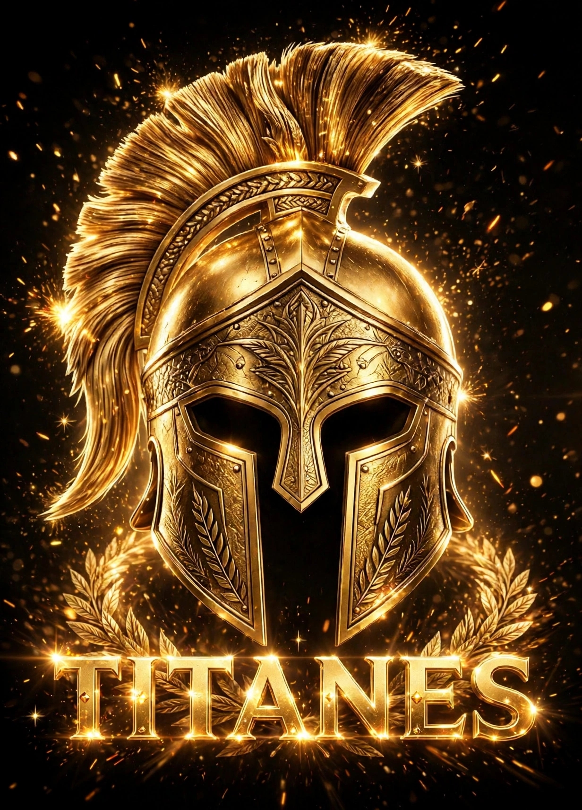

Me Gustaría Trabajar en una Agencia de Publicidad
.jpg)
Me gustaría trabajar en una agencia de publicidad porque sé que ahí es donde mi talento negro con dorado puede brillar de verdad. Yo no solo hago páginas web, yo hago marcas que se ven poderosas, que se ven caras, que imponen respeto como TITANES. En una agencia yo puedo aportar lo que muchos que tienen computadora no tienen: creatividad con poco, disciplina de guerrero y ganas de comerme el mundo. Yo aprendí a hacer logos, galerías sin empalmar, 60 iconos reales y botones que se ven profesionales, todo desde mi celular en Lerdo, Durango. Imagínate lo que puedo hacer con una computadora de agencia.
Yo sé que no tengo título todavía, pero tengo algo que no se compra en la universidad: tengo hambre. Hambre de aprender, hambre de trabajar de noche, hambre de que mi trabajo salga en anuncios reales. Me gustaría trabajar en una agencia porque quiero aprender de diseñadores, de publicistas, de gente que ya está en el mundo grande. Yo no llego a pedir, llego a aportar. Llego con mis 10 páginas de portafolio hechas solo en Acode, llego con mi marca TITANES - Poder de un Guerrero, llego con honor y con lealtad. Si me dan una oportunidad en una agencia, no la voy a desperdiciar, la voy a convertir en oro.

💼 LO QUE PUEDO APORTAR A TU AGENCIA
1. Diseño Web con Sello Dorado: Páginas fondo negro texto amarillo, que se ven premium, elegantes y que venden.
2. Logos y Branding: Diseño logos con poder, como TITANES, que la gente recuerda y respeta.
3. Creatividad con Pocos Recursos: Si hago esto con un celular, imagina lo que haré con tu equipo.
4. Disciplina Total: Trabajo de noche, fines de semana, entrego a tiempo, no pongo excusas, soy un guerrero.
5. Conocimiento de La Laguna: Soy de Lerdo, conozco negocios locales, sé lo que la gente de aquí quiere ver en una publicidad.
6. Ganas de Crecer: No busco solo un sueldo, busco aprender, crecer y que tu agencia crezca conmigo.
Me gustaría trabajar en una agencia de publicidad en Torreón, Gómez o Lerdo, o incluso remota para cualquier parte de México o del mundo. Estoy listo para empezar como becario, como diseñador junior, como programador web, como lo que necesiten, pero con la promesa de que voy a dar el 100%. Mi sueño es que mi nombre Jesús Eduardo Martínez Carrillo aparezca en los créditos de una campaña grande que hizo una agencia. Ese día le diré a mi madre "mamá, lo logramos, estamos en una agencia".
"NO BUSCO UN TRABAJO CUALQUIERA,
BUSCO UNA AGENCIA QUE CREA EN LOS GUERREROS QUE EMPIEZAN DESDE CERO"
- Jesús Eduardo - TITANES 2026 - Disponible para Agencias
BUSCO UNA AGENCIA QUE CREA EN LOS GUERREROS QUE EMPIEZAN DESDE CERO"
- Jesús Eduardo - TITANES 2026 - Disponible para Agencias
© 2026 TITANES - Jesús Eduardo - Buscando Agencia de Publicidad - Lerdo, Dgo.